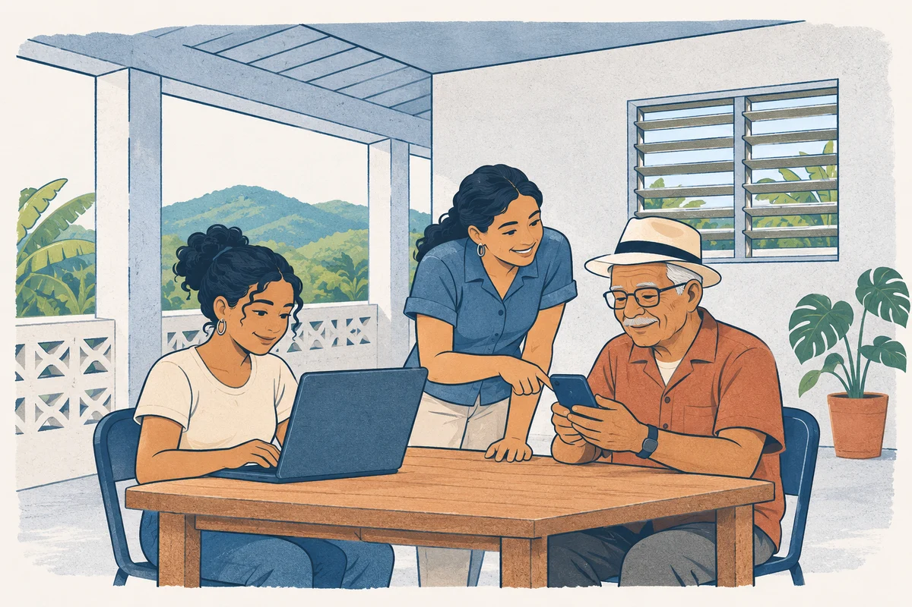

Conectarse para lo importante
Facilitar estudios, trabajo y gestiones en comunidades con alternativas limitadas o inestables.
ConectaBarrioConexión comunitaria en desarrollo · Ubicación por confirmar
Conocer la redUna red pensada para acercar Internet a comunidades rurales, comenzando por un punto de conexión compartido.

Un espacio de conexión y apoyo para las actividades de todos los días.
Elige una actividad para planificar una posible visita.
Así se organizaría la experiencia de un punto comunitario.
Indica si necesitas estudiar, trabajar o hacer una gestión.
Selecciona la fecha, la duración y un horario propuesto.
Revisa los detalles y visualiza cómo solicitarías acceso al punto.
Primera etapa: estudiar la demanda y diseñar un punto comunitario. La disponibilidad de Internet y la ubicación del punto siguen pendientes de una prueba física.
Indica tu comunidad, para qué necesitas Internet y qué modalidad te resultaría más accesible. Esta información ayuda a priorizar una futura evaluación de ubicación.
Explorar cobertura por sectorLa solicitud no confirma disponibilidad ni instalación.
Queremos entender qué modalidad resulta útil y qué se necesita para sostenerla.
Facilitar estudios, trabajo y gestiones en comunidades con alternativas limitadas o inestables.
Empezar con un espacio compartido y evaluar más adelante conexiones hacia viviendas técnicamente viables.
Priorizar estabilidad, tiempo suficiente y una experiencia que las personas quieran volver a utilizar.
ConectaBarrio propone acercar la conectividad a sectores rurales de Puerto Rico mediante un punto comunitario que facilite estudiar, trabajar y hacer gestiones.
Camino Nuevo, Yabucoa, es la referencia inicial para explorar una primera ubicación. Más adelante se podrían estudiar enlaces inalámbricos hacia sectores y hogares, según las condiciones del terreno y la red.
Un diseño por etapas que empieza en un punto de acceso compartido.
Un proveedor llevaría Internet a un punto seleccionado con permiso y capacidad suficiente.
Un router y equipos Wi-Fi permitirían que las personas se conecten desde ese espacio.
Con antenas adecuadas se podrían estudiar enlaces hacia sectores; no se asume cobertura en cada casa.
Esquema conceptual.
Ubicación y cobertura por confirmar.
En una red mesh, varios nodos se enlazan para extender la conexión. Sin embargo, la separación entre viviendas y los obstáculos pueden hacer que un mesh doméstico no sea adecuado. Para distancias mayores se evaluarían equipos de exterior y enlaces dirigidos, junto con Wi-Fi local donde haga falta.
Sobre el punto comunitario, los enlaces y los registros.
Todavía no se ha confirmado la ubicación ni la conexión. La página permite explorar cómo se organizarían los turnos y las solicitudes.
No necesariamente. Hay que considerar distancias, obstáculos, línea de vista y características de cada equipo. Para algunos trayectos puede ser más apropiado un enlace exterior dirigido que un equipo mesh doméstico.
Obtienes un código con los datos seleccionados, que se guarda en este navegador y puedes imprimir o cancelar. El pase todavía no reserva acceso a un servicio activo.
No. Una posible conexión necesita evaluación de ubicación, distancias, obstáculos, equipos, permisos y condiciones del proveedor.
En el navegador que usas. No se comparten automáticamente entre dispositivos; puedes utilizar un alias en los formularios.
Un futuro punto comunitario necesitaría alternativas de registro presencial o asistido. La ubicación y los canales de atención aún están por definirse.
Conoce cómo se distribuiría la conexión, compara escenarios de distancia y selecciona el tipo de acceso que mejor responde a tu comunidad.
Ir a la prueba de redCompara las separaciones entre estructuras con referencias de equipos inalámbricos. Cambia la distancia, el equipo y las condiciones del trayecto para identificar qué habría que comprobar en campo.
Mediana de separación entre estructuras vecinas.
Puedes cambiarla para explorar un enlace hipotético desde un centro o entre dos puntos.
La línea de vista debe comprobarse en la ubicación y altura de montaje reales.
Estimaciones exploratorias previas a partir de cartografía de estructuras (CRIM/Junta). No son mediciones entre antenas.
| Sector | Estructuras | Mediana | Rango observado |
|---|---|---|---|
| Nuevo Cuño | 33 | 32 m | 14–81 m |
| La Maloja | 19 | 32 m | 23–102 m |
| Hoyo Vicioso | 16 | 60 m | 14–170 m |
La mediana corresponde a la estructura vecina más próxima dentro de la muestra. No representa la distancia al futuro punto comunitario ni demuestra que cada estructura sea una vivienda.
Referencias comerciales para comparar, sujetas a revisión técnica y a las condiciones del lugar.
Distancia orientativa recomendada entre nodos inalámbricos. Pensado principalmente para ampliar Wi-Fi dentro de un inmueble.
Referencia anunciada en exterior a 2.4 GHz; depende también del dispositivo que intenta conectarse.
Referencia de enlace exterior punto a punto con equipos compatibles y condiciones favorables.
Referencia exterior de 5 GHz para enlazar puntos; requiere planificación, orientación y vista despejada.
El siguiente paso sería escoger un punto comunitario, verificar permisos y conexión principal, medir los trayectos reales y probar calidad de señal, velocidad y estabilidad antes de seleccionar la arquitectura.
Escoge una actividad, el tiempo que necesitarías y un horario para generar tu pase preliminar.
Revisa los detalles. Puedes imprimirlo o cancelarlo.
Indica las necesidades de tu comunidad y cómo te gustaría conectarte. La cobertura necesita un estudio técnico.
Explora las actividades y preferencias registradas en este navegador. La información todavía no está sincronizada con otros dispositivos.
Permiten ensayar el recorrido y revisar qué actividad se eligió.
La utilidad del servicio debe observarse en pruebas con personas. Este panel no mide velocidad, conexiones reales ni tareas terminadas.
Todavía no hay respuestas sobre esta opción.
La preferencia de una persona no sustituye la visita al lugar, la medición de la señal ni la prueba de conexión.
Comprobar si las personas usarían de nuevo la solución, si pueden completar sus tareas y si la conexión se mantiene estable.
La intención declarada en un formulario no equivale a uso recurrente.
Sobre los registros: puedes exportar el CSV de cada navegador y consolidar los archivos. Este panel todavía no sincroniza dispositivos. Evita ingresar datos de contacto o direcciones particulares.
La información permanece en este navegador.
| Tipo | Código | Alias | Actividad | Detalle |
|---|
Genera un pase o una solicitud para ver cómo se registra el recorrido.
Probar una reserva